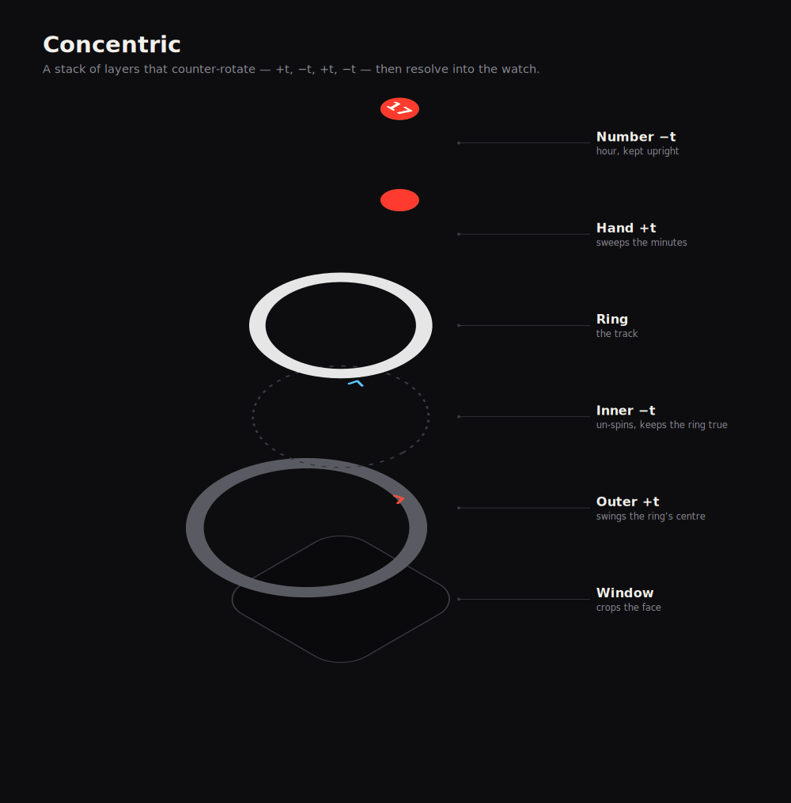
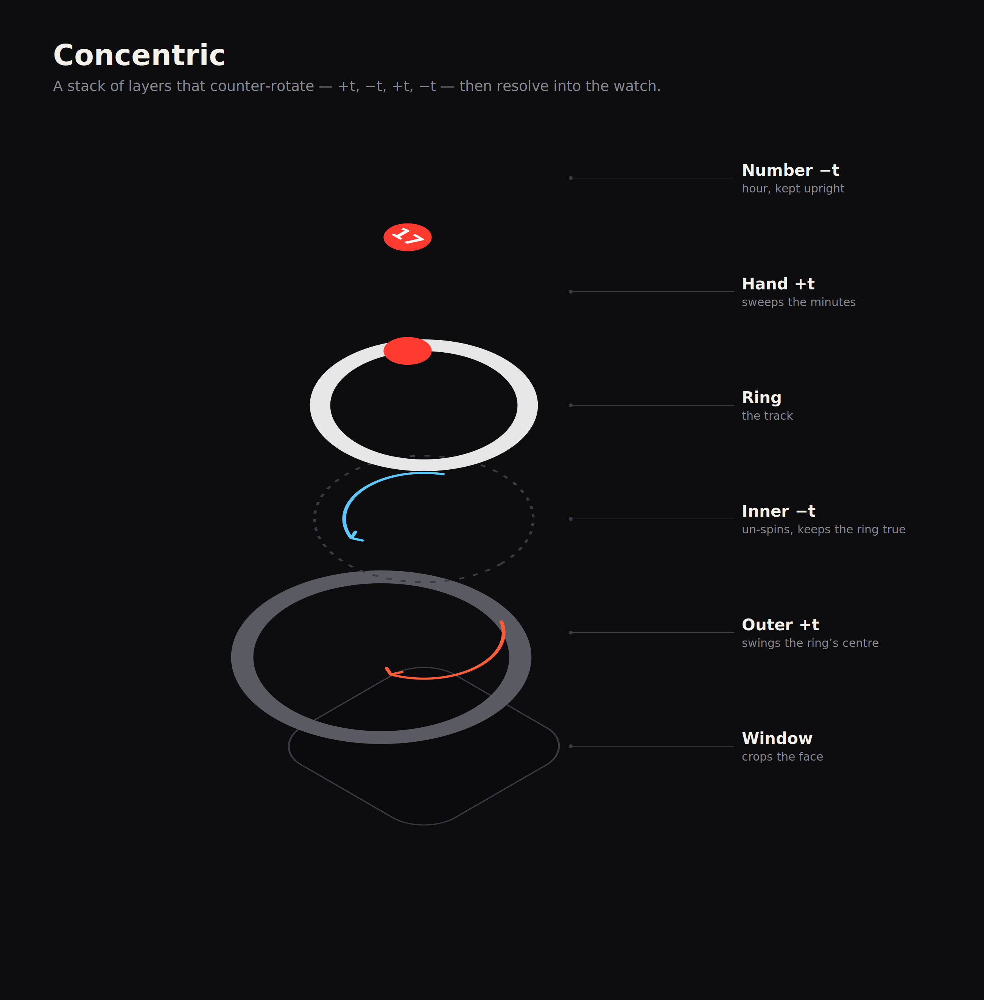

Case study · Watch face · SwiftUI → web
An ambient watch you read by intuition — built from counter-rotating layers and a moving crop.
live · your time
The idea
A normal watch wants you to read it — two hands, twelve numbers, precise. Concentric asks you to intuit it instead. There's one moving crescent and, near the top of each hour, a number. You learn to feel the time from the shape, the way you feel it from daylight.
The catch for a designer: that simplicity is produced by something fiddly underneath — a small stack of layers spinning against each other. Easy to feel, hard to explain. So I built a diagram that takes it apart.
How it's built
Each layer turns the opposite way to the one above it — +t, −t, +t, −t. The spins cancel where they should and survive where they shouldn't.
The Outer layer carries an oversized, off-centre ring and rotates one turn per hour; because the ring's centre is offset, that spin swings the visible crescent — the crop — around the face. The Inner layer counter-rotates to cancel the spin, so the ring stays a clean circle instead of tumbling. The hand rides the ring to mark the minute, and the number counter-rotates again so the hour always sits upright.


The craft
Concentric began in SwiftUI; the version ticking at the top of this page is a faithful port in plain HTML and nested CSS transform: rotate() — same geometry, same maths. The explainer above is generated by a Python script that reads those exact transform values and rasterises a frame at a time, so the diagram can't drift from the real thing.
It's deliberately an ambient object: most of the hour you read the crescent, and the hour digit surfaces as it sweeps past the top. The diagram shows that honestly rather than pretending the number is always there.